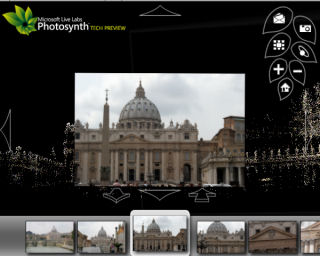

Microsoft Live Labs has released today a preview of a new media technology called Photosynth. What it does is reconstructing 3D spaces from photo collections created by different people about the same subject. You can zoom in/out, pan, view scenes from different angles. Two of the examples on the Photosynth site are about Piazza San Marco in Venice and Piazza San Pietro in Rome. The application is really impressive. I don't just say that because I work for Microsoft; this is really a must see technology preview if you are into travel and photography (requires a broadband connection). If you leave your comments here, I'll make sure to pass them along to the Photosynth folks.